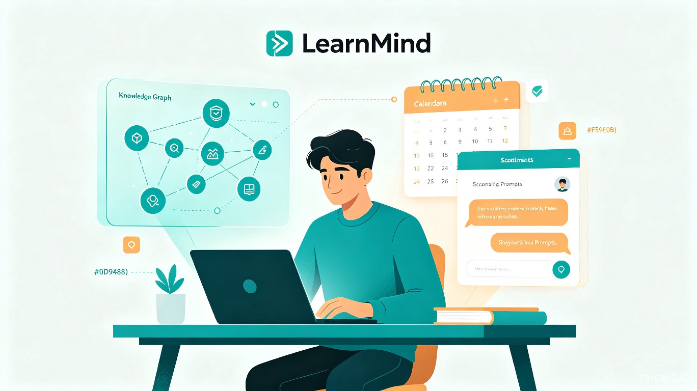
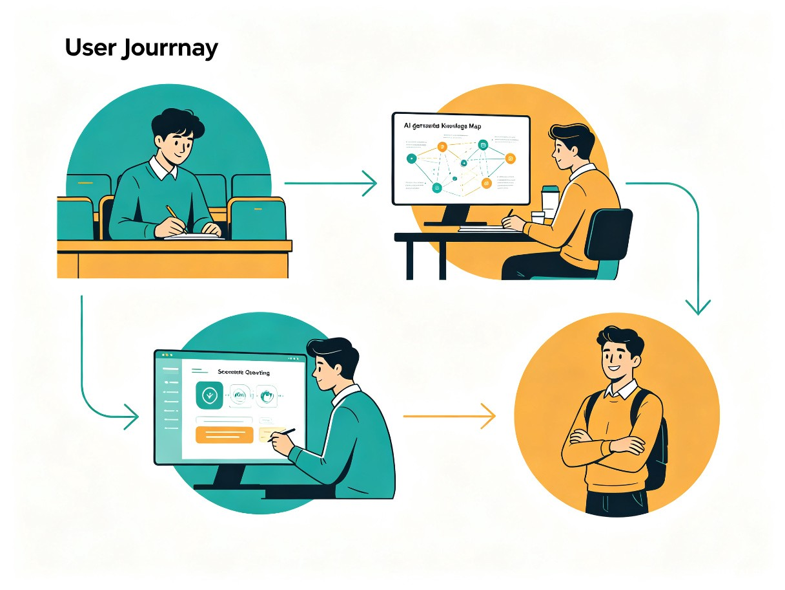
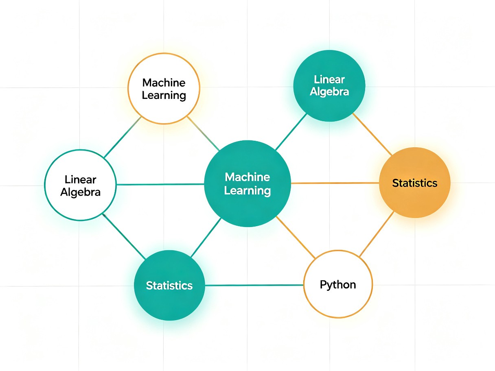

学思 LearnMind
AI 驱动的大学生智能学习伙伴 —— 让 AI 成为思维的脚手架，而非答案的替代品

一、创意介绍
想解决什么问题
当前 99.2% 的大学生已在使用 AI 工具辅助学习，但 62.3% 的学生担心"过度依赖 AI 导致思维懒惰，丧失独立思考能力"[1]。市面上的 AI 学习工具大多是"替代型"的——直接给出答案、代写论文，学生用完后知识留存率反而下降。大学生真正需要的是一个"引导型" AI 学习伙伴，既能提升学习效率，又能培养独立思考能力。
为什么会想到做这个
灵感来源于大学生日常学习中的真实困境：期末复习时对着厚厚的课本无从下手，用 AI 生成复习提纲却发现内容空洞、无法内化。调研发现，约 75% 的大学生存在拖延症[2]，超过 15% 的学生面临延毕风险[3]。MIT 研究证实，使用 AI 写作时大脑连接活性降低 55%，83% 的学生不记得自己写了什么[4]。"替代型" AI 工具正在伤害学生的学习能力。
产品形态
学思是一款面向大学生的 Web 应用（响应式网站），支持 PC 和移动端访问。核心功能包括：智能知识图谱构建、苏格拉底式提问引导复习、错题溯源与薄弱点分析、DDL 智能预警与任务拆解。
二、核心数据洞察
三、目标用户及痛点
面向哪些用户
全国在校大学生（本科生及研究生），尤其是面临以下困境的群体：
- 期末复习效率低：缺乏系统化知识管理，考前突击效果差
- 论文写作缺乏方向：AI 代写泛滥但质量堪忧，高校密集出台规范
- 课堂笔记整理困难：PPT 翻太快，录音整理耗时双倍
- 时间管理混乱：社团、实习、比赛日程冲突，DDL 频繁逾期
使用场景
日常上课
课堂录音自动转文字，实时生成结构化笔记，自动标注重点知识点
期末复习
基于个人知识图谱生成复习路线，苏格拉底式提问检验掌握程度
论文写作
辅助文献检索、大纲生成、语言润色（非代写），帮助通过 AIGC 检测
日常管理
自动同步课表、关联 DDL、提前预警、智能拆解任务
当前痛点对比
| 场景 | 当前痛点 | 学思的解决方案 |
|---|---|---|
| 课堂笔记 | 老师 PPT 翻太快，手机拍课件后相册淹没，复习时找不到 | 实时语音转写 + 自动结构化 + 知识点关联 |
| 期末复习 | 考前突击效果差，知识留存率低，停用 AI 后成绩反降 17% | 个人知识图谱 + 苏格拉底式提问引导 |
| 论文写作 | 97% 遇到 AI 虚假信息，高校禁止直接生成论文正文 | 合规辅助：文献检索、大纲、润色（非代写） |
| 时间管理 | 社团、实习、比赛日程混乱，75% 自认有拖延症 | 智能课表同步 + DDL 预警 + 任务自动拆解 |
四、核心功能架构
flowchart TB
subgraph 输入层
A[课堂录音/笔记] --> B[文档上传]
C[课表/DDL导入] --> B
D[错题/作业录入] --> B
end
subgraph AI引擎层
B --> E[语音转写 + NLP分析]
E --> F[知识图谱构建]
F --> G[苏格拉底式提问引擎]
F --> H[薄弱点诊断]
E --> I[DDL智能排期]
end
subgraph 输出层
G --> J[个性化复习路线]
H --> K[错题溯源报告]
I --> L[任务拆解 + 预警]
F --> M[知识图谱可视化]
end
四大核心模块
智能知识图谱
自动从课堂笔记、教材、作业中提取知识点，构建个人专属知识图谱，可视化呈现知识掌握程度和关联关系
苏格拉底式提问
不直接给答案，通过层层递进的提问引导学生主动思考，检验真实理解程度，避免"假学会"
错题溯源分析
不只是记录错题，而是追溯到知识图谱中的薄弱节点，精准推荐针对性学习内容
DDL 智能预警
自动同步课表和各类截止日期，根据任务量智能拆解为每日小目标，提前预警避免逾期
五、用户流程

flowchart LR
A[上课录音] --> B[AI自动转写]
B --> C[知识点提取]
C --> D[知识图谱更新]
D --> E{复习模式}
E --> F[苏格拉底式提问]
E --> G[薄弱点强化]
E --> H[模拟测试]
F --> I[掌握度评估]
G --> I
H --> I
I --> J[个性化推荐]
J --> D
六、知识图谱可视化
学思的核心差异化在于个人知识图谱的构建与可视化。通过 AI 自动分析学习材料，将零散的知识点连接成结构化的知识网络，帮助学生建立系统化的知识体系。

七、价值与意义
效率提升
学思通过智能知识图谱和个性化复习路线，将学生的资料阅读时间压缩 75%，结构化输出提升复习效率 2.3 倍[4]。苏格拉底式提问引导模式确保学生在使用 AI 的同时保持大脑活跃，避免"思维懒惰"。松鼠 AI 千人实验显示，引导型 AI 教学组平均分 87.58，显著高于真人组 78.80，个性化学习提分高达 30%[4]。
社会价值
2026 年毕业生将是全球第一代"AI 原生代"，其大学生涯与 ChatGPT 等 AI 工具的兴起同步[5]。学思倡导"AI 作为脚手架而非答案机"的理念，帮助大学生建立健康的 AI 使用习惯，在享受 AI 带来效率提升的同时，真正提升独立思考能力和知识留存率。这对于中国高等教育数字化转型和人才培养质量提升具有深远意义。
核心理念：学思不是替你学习的 AI，而是陪你思考的伙伴。我们相信，真正的学习效率提升，来自于理解力的增长，而非答案的获取速度。
八、技术路线
| 模块 | 技术方案 | 说明 |
|---|---|---|
| 前端 | React + TypeScript | 响应式设计，支持 PC/移动端 |
| 知识图谱 | Neo4j + NLP 提取 | 自动构建知识点关联网络 |
| AI 引擎 | 大语言模型 API + RAG | 苏格拉底式提问 + 检索增强生成 |
| 语音转写 | Whisper + NLP 后处理 | 课堂录音实时转文字 |
| 后端 | Node.js / Python FastAPI | 微服务架构，弹性扩展 |
| 部署 | 云服务 + CDN | 保障全国大学生流畅访问 |